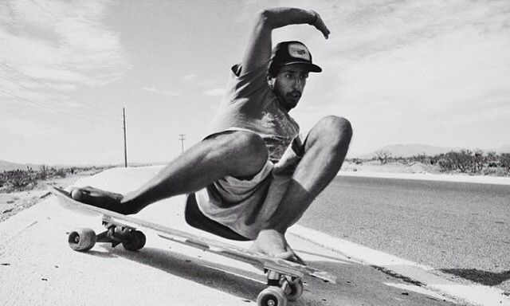
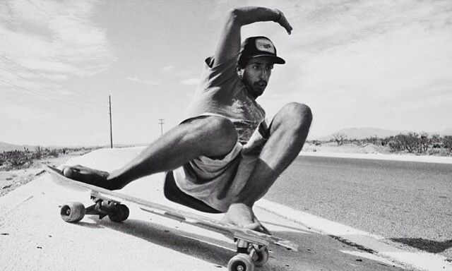
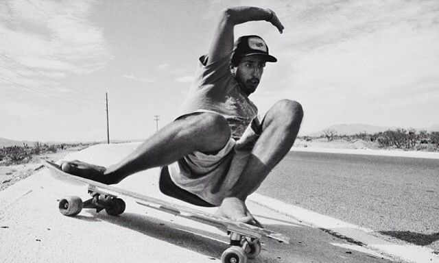
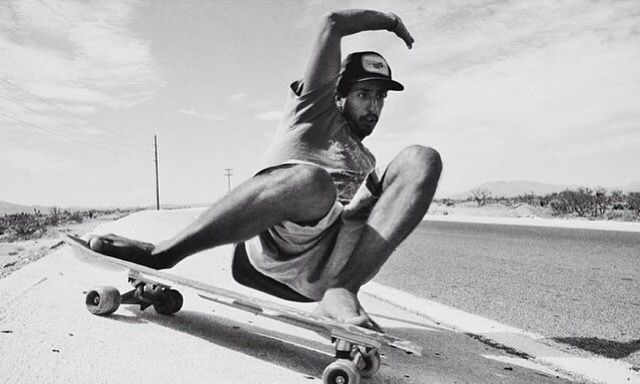

Es un estilo muy similar al que se utiliza sobre una tabla de snowboard o Surf: Girando y bombeando la tabla. Las tablas tienen un tamaño entre 34” y 41” y mucho flex (la flexibilidad de la tabla). Se practica en zonas con algo de pendiente o llanas. Las tablas pueden ser parecidas a las de surf (pintail) o con los extremos hacia arriba si queremos, además, practicar trucos (kicktail).
Aunque el surfskate pueda parecer algo nuevo, Greg Falk y Neil Carver llevan propulsando esta modalidad desde que inventaron su primer eje Carver en 1996. Empezaron intentando comercializar su invento al público skater hasta darse cuenta de que el público que de verdad les interesaba eran los surfistas.
Durante todos estos años el surfskate era practicado por solo una minoría de gente que buscaba practicar surf en el asfalto, pero gracias al boom del surf durante los últimos años, cada vez más gente se ha aficionado a esta disciplina.